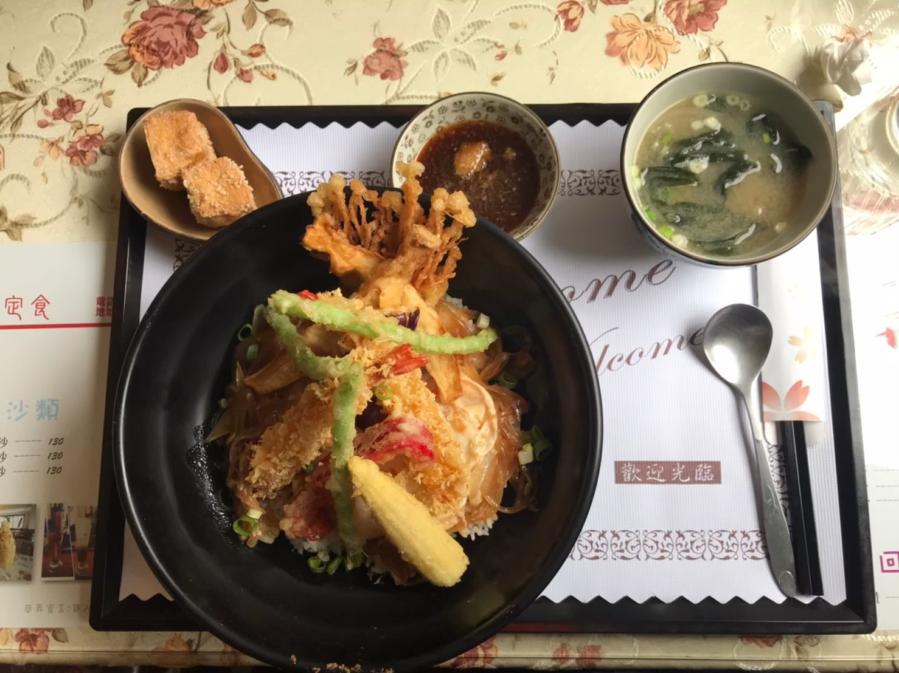
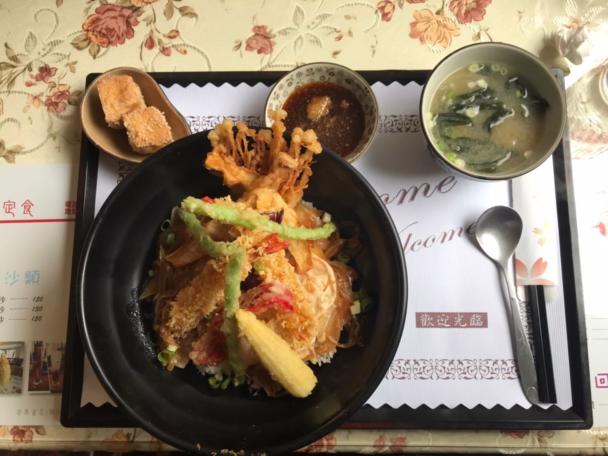
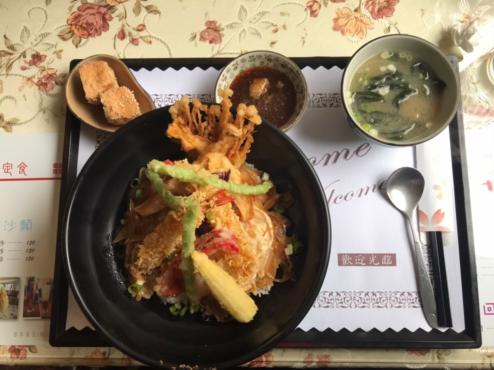

中原的美食太多，每天都好煩惱

巷弄和風定食

這間是唯一一家價格略高的餐廳(=´ω`=)當時不知道怎麼有勇氣走進去，但簡餐本來就都價格偏貴啦！ 這間店很適合朋友一起來聚餐，是一間滿懷舊的餐廳，他的炸蔬菜天婦羅很好吃，不會很油膩，甚至是清爽，大家家聚不知道吃什麼的話 這一間店很適合喔！中價位但也不是到很貴，餐點也很好吃！
推薦指數：⭐⭐⭐⭐ cp值：⭐⭐ 營業時間：11:00~22:00 周四公休